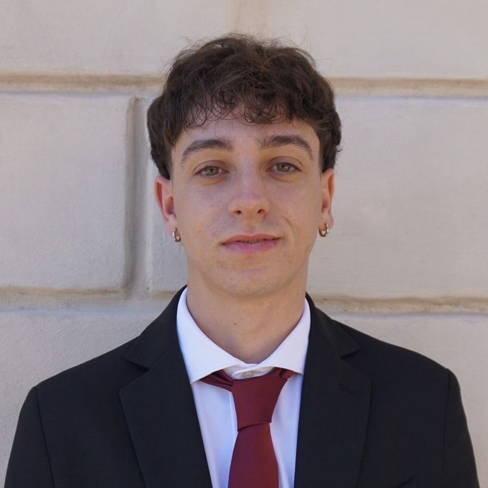

My name is Matteo Bruno, and I come from San Salvo, a small corner of Abruzzo that nurtured my curiosity and creativity. After graduating in computer science, I discovered that my true passion was cinema and editing, starting to learn as a self-taught and experimenting with music videos together with a musician friend. Every project taught me how to combine technical skills with artistic sensitivity, pushing me to grow constantly. The decision to move to Rome to attend ITS Roberto Rossellini was a bold choice, driven by the desire to turn my passion into a career. Today, I am determined to combine experience, creativity, and dedication to build my path in the audiovisual world.
Email: brunomatteo03@outlook.it
Instagram: @matbro17